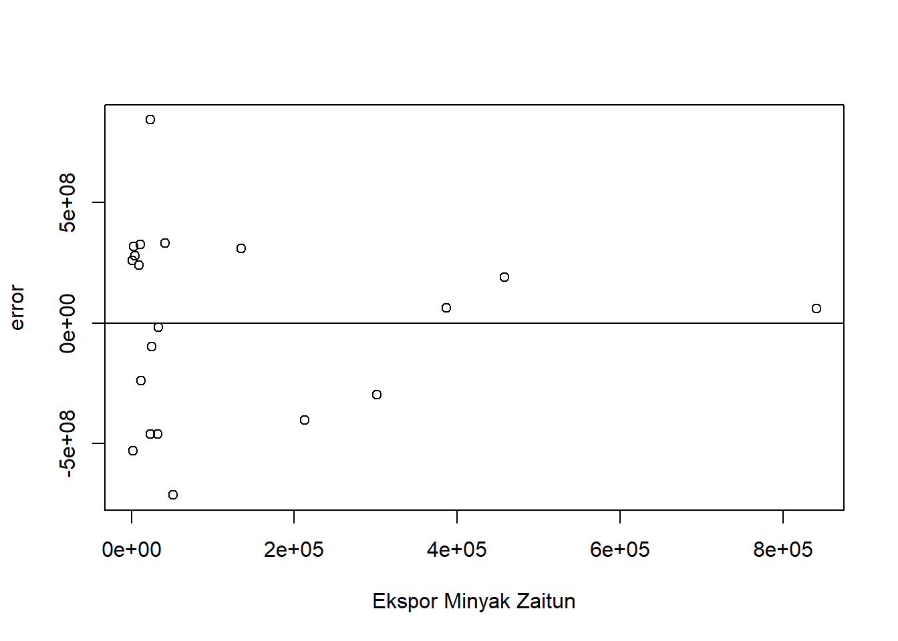

setwd("D:/METOPEL UAS/BAIHAQI METOPEL")
library(readxl)
library(tidyverse)
library(kableExtra)Dampak Ekspor Minyak Nabati terhadap total akumulasi ekspor Minyak dan Lemak Hewani dan nabati.
Metode Penelitian Politeknik APP Jakarta

1 Pendahuluan
1.1 Latar belakang
Indonesia, sebagai negara agraris, memiliki kekayaan alam yang melimpah, terutama dalam sektor non-migas seperti perkebunan, peternakan, dan perikanan. Salah satu komoditas unggulan yang dihasilkan adalah minyak nabati, seperti minyak sawit dan minyak kelapa.
Ekspor komoditas ini memiliki peran penting dalam perekonomian Indonesia, dan berpotensi mempengaruhi total akumulasi ekspor negara tersebut. Namun, sejauh ini, belum banyak penelitian yang mengkaji pengaruh ekspor komoditas minyak nabati terhadap total akumulasi ekspor pada Bab 15 dalam BTKI.
Bab 15 BTKI menjelaskan tentang “Lemak Hewani dan Minyak Nabati; Produk Turunannya; Campuran Lemak; Wax dari Hewan atau Tumbuhan”. Ini mencakup berbagai jenis lemak dan minyak, termasuk minyak nabati seperti minyak sawit dan minyak kelapa, serta produk turunannya. Bab ini juga mencakup campuran lemak dan wax yang berasal dari hewan atau tumbuhan.
Oleh karena itu, makalah penelitian ini bertujuan untuk menganalisis pengaruh ekspor komoditas minyak nabati terhadap total akumulasi ekspor pada Bab 15 BTKI. Metode yang akan digunakan dalam analisis ini adalah regresi linear berganda, yang memungkinkan kita untuk memahami hubungan antara variabel-variabel tersebut secara lebih mendalam.
Dengan demikian, hasil penelitian ini diharapkan dapat memberikan wawasan baru tentang dinamika ekspor komoditas minyak nabati di Indonesia, serta implikasinya terhadap total akumulasi ekspor pada Bab 15 BTKI. Penelitian ini juga diharapkan dapat menjadi referensi bagi pembuat kebijakan dalam merumuskan strategi ekspor yang lebih efektif dan efisien.
1.2 Ruang lingkup
Ruang lingkup penelitian ini mencakup beberapa area utama:
Komoditas Minyak Nabati: Penelitian ini akan fokus pada komoditas minyak nabati yang dihasilkan oleh Indonesia, seperti minyak sawit dan minyak kelapa. Ini mencakup produksi, ekspor, dan dinamika pasar dari komoditas tersebut.
Pengaruh terhadap Ekspor: Penelitian ini bertujuan untuk menganalisis pengaruh ekspor komoditas minyak nabati terhadap total akumulasi ekspor Indonesia. Ini mencakup analisis terhadap data ekspor dan identifikasi faktor-faktor yang mempengaruhi akumulasi ekspor.
Bab 15 BTKI: Penelitian ini juga akan melibatkan analisis terhadap Bab 15 BTKI, yang mencakup “Lemak Hewani dan Minyak Nabati; Produk Turunannya; Campuran Lemak; Wax dari Hewan atau Tumbuhan”. Ini mencakup pemahaman mendalam tentang klasifikasi dan regulasi yang terkait dengan komoditas ini.
Metode Regresi Linear Berganda: Penelitian ini akan menggunakan metode regresi linear berganda untuk menganalisis hubungan antara ekspor komoditas minyak nabati dan total akumulasi ekspor. Ini mencakup pengumpulan data, pemodelan, dan interpretasi hasil.
Dengan demikian, penelitian ini mencakup berbagai aspek dari produksi hingga ekspor komoditas minyak nabati, dengan fokus khusus pada pengaruhnya terhadap total akumulasi ekspor bab 15 BTKI Indonesia. Penelitian ini juga mencakup analisis terhadap regulasi dan kebijakan yang relevan, serta penggunaan metode statistik untuk menganalisis data.
1.3 Rumusan masalah
Berikut adalah beberapa rumusan masalah yang berfokus pada penelitian mahasiswa:
- Apakah ada hubungan signifikan antara ekspor komoditas minyak nabati seperti minyak sawit dan minyak kelapa terhadap total akumulasi ekspor Indonesia pada Bab 15 BTKI?
- Sejauh mana pengaruh ekspor komoditas minyak nabati terhadap total akumulasi ekspor pada Bab 15 BTKI?
- Bagaimana pola hubungan antara ekspor komoditas minyak nabati dan total akumulasi ekspor pada Bab 15 BTKI?
- Bagaimana efektivitas metode regresi linear berganda dalam menganalisis hubungan antara ekspor komoditas minyak nabati dan total akumulasi ekspor pada Bab 15 BTKI?
- Bagaimana hasil penelitian ini dapat digunakan untuk merumuskan strategi ekspor yang lebih efektif dan efisien?
Rumusan masalah ini dirancang untuk membantu mahasiswa dalam melakukan penelitian yang berfokus pada analisis ekspor komoditas minyak nabati dan implikasinya terhadap total akumulasi ekspor Indonesia.
1.4 Tujuan dan manfaat penelitian
Berikut adalah tujuan dan manfaat penelitian ini:
Tujuan:
- Mengetahui hubungan antara ekspor komoditas minyak nabati seperti minyak sawit dan minyak kelapa terhadap total akumulasi ekspor Indonesia pada Bab 15 BTKI.
- Mengukur sejauh mana pengaruh ekspor komoditas minyak nabati terhadap total akumulasi ekspor pada Bab 15 BTKI.
- Memahami pola hubungan antara ekspor komoditas minyak nabati dan total akumulasi ekspor pada Bab 15 BTKI.
- Menguji efektivitas metode regresi linear berganda dalam menganalisis hubungan tersebut.
- Menghasilkan rekomendasi untuk merumuskan strategi ekspor yang lebih efektif dan efisien berdasarkan hasil penelitian.
Manfaat:
- Bagi Mahasiswa: Hasil penelitian ini dapat menjadi referensi bagi mahasiswa dalam memahami dinamika ekspor komoditas minyak nabati di Indonesia dan implikasinya terhadap total akumulasi ekspor.
- Bagi Akademisi: Penelitian ini dapat menjadi sumbangan ilmu pengetahuan, khususnya dalam bidang ekonomi dan perdagangan internasional.
1.5 Package
2 Studi pustaka
Minyak nabati merupakan sumber bahan baku yang menjanjikan bagi proses produksi biodiesel karena bersifat terbarukan, dapat diproduksi dalam skala besar, dan ramah lingkungan (Wenten,2010).
Kegiatan perdagangan internasional yang memberikan rangsangan guna membutuhkan permintaan dalam negeri yang menyebabkan tumbuhnya industri-industri pabrik besar, bersamaan dengan struktur politik yang stabil dan lembaga sosial yang fleksibel. Berdasarkan uraian di atas, terlihat bahwa ekspor mencerminkan aktivitas perdagangan antarbangsa yang dapat memberikan dorongan dalam dinamika pertumbuhan perdagangan internasional, sehingga suatu negara-negara yang sedang berkembang kemungkinan untuk mencapai kemajuan perekonomian setaraf dengan negara-negara yang lebih maju (Todaro, 2002:49).
Ekspor adalah pembelian negara lain atas barang buatan perusahaan-perusahaan di dalam negeri. Faktor terpenting yang menentukan ekspor adalah kemampuan dari Negara tersebut untuk mengeluarkan barangbarang yang dapat bersaing dalam pasaran luar negeri. (Sukirno, 2008: 205).
Ekspor akan secara langsung mempengaruhi pendapatan nasional. Akan tetapi, hubungan yang sebaliknya tidak selalu berlaku, yaitu kenaikan pendapatan nasional belum tentu menaikkan ekspor oleh karena pendapatan nasional dapat mengalami kenaikan sebagai akibat dari kenaikan pengeluaran rumah tangga, investasi perusahaan, pengeluaran pemerintah dan penggantian barang impor dengan barang buatan dalam negeri. (Sukirno, 2008:206).
Ekspor neto merupakan selisih antara ekspor total dengan impor total suatu negara. Apabila nilai ekspor neto positif, berartinilai ekspor lebih besar dari nilai impor dan apabila nilai ekspor neto negatif, berarti nilai ekspor lebih kecil dari nilai impor (Case and Fair, 2007: 387)
3 Metode penelitian
3.1 Data
| tahun | minyak | sawit | kelapa | zaitun | bunga |
|---|---|---|---|---|---|
| 2003 | $ 3.003.362.000,00 | $ 2.454.626.000,00 | $ 418.286.000,00 | $ 841.000,00 | $ 554.000,00 |
| 2004 | $ 4.421.203.000,00 | $ 3.441.776.000,00 | $ 767.624.000,00 | $ 135.000,00 | $ 27.000,00 |
| 2005 | $ 4.950.578.000,00 | $ 3.756.284.000,00 | $ 1.001.508.000,00 | $ 11.000,00 | $ 43.000,00 |
| 2006 | $ 6.069.939.000,00 | $ 4.817.642.000,00 | $ 887.149.000,00 | $ 1.000,00 | $ 1.193,00 |
| 2007 | $ 10.226.791.000,00 | $ 7.868.639.000,00 | $ 1.568.215.000,00 | $ 41.000,00 | $ 314.000,00 |
| 2008 | $ 15.624.001.000,00 | $ 12.375.570.000,00 | $ 2.193.091.000,00 | $ 4.000,00 | $ 67.000,00 |
| 2009 | $ 12.219.489.000,00 | $ 10.367.621.000,00 | $ 1.479.158.000,00 | $ 32.000,00 | $ 93.000,00 |
| 2010 | $ 16.312.244.000,00 | $ 13.468.966.000,00 | $ 2.293.761.000,00 | $ 51.000,00 | $ 624.000,00 |
| 2011 | $ 21.655.267.000,00 | $ 17.261.247.000,00 | $ 3.051.634.000,00 | $ 458.000,00 | $ 228.000,00 |
| 2012 | $ 21.299.809.000,00 | $ 17.602.168.000,00 | $ 2.458.230.000,00 | $ 301.000,00 | $ 118.000,00 |
| 2013 | $ 19.224.920.000,00 | $ 15.838.850.000,00 | $ 1.829.519.000,00 | $ 387.000,00 | $ 18.000,00 |
| 2014 | $ 21.059.510.000,00 | $ 17.464.905.000,00 | $ 2.484.350.000,00 | $ 213.000,00 | $ 104.000,00 |
| 2015 | $ 18.658.778.000,00 | $ 15.385.275.000,00 | $ 2.378.262.000,00 | $ 23.000,00 | $ 281.000,00 |
| 2016 | $ 18.231.689.000,00 | $ 14.365.422.000,00 | $ 2.726.686.000,00 | $ 3.000,00 | $ 53.000,00 |
| 2017 | $ 22.965.598.000,00 | $ 18.513.121.000,00 | $ 3.028.314.000,00 | $ 33.000,00 | $ 116.000,00 |
| 2018 | $ 20.346.230.000,00 | $ 16.527.848.000,00 | $ 2.424.405.000,00 | $ 25.000,00 | $ 210.000,00 |
| 2019 | $ 17.634.842.000,00 | $ 14.716.275.000,00 | $ 1.711.900.000,00 | $ 12.000,00 | $ 1.298,00 |
| 2020 | $ 20.720.837.000,00 | $ 17.364.812.000,00 | $ 1.877.160.000,00 | $ 2.000,00 | $ 262.000,00 |
| 2021 | $ 32.919.062.000,00 | $ 26.755.136.000,00 | $ 2.885.387.000,00 | $ 9.000,00 | $ 93.000,00 |
| 2022 | $ 35.204.423.000,00 | $ 27.765.830.000,00 | $ 3.127.463.000,00 | $ 23.000,00 | $ 705.000,00 |
Penelitian ini menggunakan data time series yang kemudian diproses menggunakan metode regresi linear multivariat untuk melihat hubungan antara nilai ekspor komoditas minyak nabati yang tertdiri dari sawit, kelapa, zaitun, dan minyak bunga matahari terhadap total akumulasi ekspor pada bab 15 BTKI.
3.2 Metode analisis
Metode analisis yang akan digunakan dalam penelitian ini adalah regresi linear multivariat. Dalam metode ini, kita akan mempertimbangkan beberapa variabel independen sekaligus untuk memprediksi variabel dependen. Dalam konteks penelitian ini, variabel dependen adalah total akumulasi ekspor pada Bab 15 BTKI, sedangkan variabel independennya adalah ekspor minyak sawit, minyak kelapa, minyak zaitun, dan minyak bunga matahari.
Model regresi linear multivariat dapat ditulis sebagai berikut:
\[ Y=\beta_0 + \beta_1 X1+\beta_2 X2+\beta_3 X3+\beta_4 X4+\mu. \] dimana: - \(Y\) adalah total akumulasi ekspor pada Bab 15 BTKI, - \(X_1\) adalah ekspor minyak sawit, - \(X_2\) adalah ekspor minyak kelapa, - \(X_3\) adalah ekspor minyak zaitun, - \(X_4\) adalah ekspor minyak bunga matahari, - \(\beta_0, \beta_1, \beta_2, \beta_3, \beta_4\) adalah parameter yang perlu diestimasi, - \(\epsilon\) adalah kesalahan acak.
Tujuan dari analisis ini adalah untuk menentukan sejauh mana variabel independen (ekspor minyak sawit, minyak kelapa, minyak zaitun, dan minyak bunga matahari) mempengaruhi variabel dependen (total akumulasi ekspor pada Bab 15 BTKI).
4 Pembahasan
4.1 Pembahasan masalah
4.1.1 Plot dan Data
#impor dataset
read_excel("nabati.xlsx")# A tibble: 20 × 6
tahun minyak sawit kelapa zaitun bunga
<dbl> <dbl> <dbl> <dbl> <dbl> <dbl>
1 2003 3003362000 2454626000 418286000 841000 554000
2 2004 4421203000 3441776000 767624000 135000 27000
3 2005 4950578000 3756284000 1001508000 11000 43000
4 2006 6069939000 4817642000 887149000 1000 1193
5 2007 10226791000 7868639000 1568215000 41000 314000
6 2008 15624001000 12375570000 2193091000 4000 67000
7 2009 12219489000 10367621000 1479158000 32000 93000
8 2010 16312244000 13468966000 2293761000 51000 624000
9 2011 21655267000 17261247000 3051634000 458000 228000
10 2012 21299809000 17602168000 2458230000 301000 118000
11 2013 19224920000 15838850000 1829519000 387000 18000
12 2014 21059510000 17464905000 2484350000 213000 104000
13 2015 18658778000 15385275000 2378262000 23000 281000
14 2016 18231689000 14365422000 2726686000 3000 53000
15 2017 22965598000 18513121000 3028314000 33000 116000
16 2018 20346230000 16527848000 2424405000 25000 210000
17 2019 17634842000 14716275000 1711900000 12000 1298
18 2020 20720837000 17364812000 1877160000 2000 262000
19 2021 32919062000 26755136000 2885387000 9000 93000
20 2022 35204423000 27765830000 3127463000 23000 705000dat <- read_excel("nabati.xlsx")
kbl(dat) %>%
kable_styling(bootstrap_options = c("striped", "hover", "condensed", "responsive"))| tahun | minyak | sawit | kelapa | zaitun | bunga |
|---|---|---|---|---|---|
| 2003 | 3003362000 | 2454626000 | 418286000 | 841000 | 554000 |
| 2004 | 4421203000 | 3441776000 | 767624000 | 135000 | 27000 |
| 2005 | 4950578000 | 3756284000 | 1001508000 | 11000 | 43000 |
| 2006 | 6069939000 | 4817642000 | 887149000 | 1000 | 1193 |
| 2007 | 10226791000 | 7868639000 | 1568215000 | 41000 | 314000 |
| 2008 | 15624001000 | 12375570000 | 2193091000 | 4000 | 67000 |
| 2009 | 12219489000 | 10367621000 | 1479158000 | 32000 | 93000 |
| 2010 | 16312244000 | 13468966000 | 2293761000 | 51000 | 624000 |
| 2011 | 21655267000 | 17261247000 | 3051634000 | 458000 | 228000 |
| 2012 | 21299809000 | 17602168000 | 2458230000 | 301000 | 118000 |
| 2013 | 19224920000 | 15838850000 | 1829519000 | 387000 | 18000 |
| 2014 | 21059510000 | 17464905000 | 2484350000 | 213000 | 104000 |
| 2015 | 18658778000 | 15385275000 | 2378262000 | 23000 | 281000 |
| 2016 | 18231689000 | 14365422000 | 2726686000 | 3000 | 53000 |
| 2017 | 22965598000 | 18513121000 | 3028314000 | 33000 | 116000 |
| 2018 | 20346230000 | 16527848000 | 2424405000 | 25000 | 210000 |
| 2019 | 17634842000 | 14716275000 | 1711900000 | 12000 | 1298 |
| 2020 | 20720837000 | 17364812000 | 1877160000 | 2000 | 262000 |
| 2021 | 32919062000 | 26755136000 | 2885387000 | 9000 | 93000 |
| 2022 | 35204423000 | 27765830000 | 3127463000 | 23000 | 705000 |
reg1<-lm(minyak~sawit+kelapa+zaitun+bunga,data=dat)dat$m<-resid(reg1)
plot(dat$minyak,dat$m,xlab="Total Nilai Ekspor Bab 15 BTKI",ylab="error")
abline(h=0)dat$m<-resid(reg1)
plot(dat$sawit,dat$m,xlab="Ekspor Minyak Sawit",ylab="error")
abline(h=0)dat$m<-resid(reg1)
plot(dat$kelapa,dat$m,xlab="Ekspor Minyak Kelapa",ylab="error")
abline(h=0)dat$m<-resid(reg1)
plot(dat$zaitun,dat$m,xlab="Ekspor Minyak Zaitun",ylab="error")
abline(h=0)
dat$m<-resid(reg1)
plot(dat$bunga,dat$m,xlab="Ekspor Minyak Bunga Matahari",ylab="error")
abline(h=0)4.2 Analisis masalah
Hasil regresinya adalah
reg1<-lm(minyak~sawit+kelapa+zaitun+bunga,data=dat)
summary(reg1)
Call:
lm(formula = minyak ~ sawit + kelapa + zaitun + bunga, data = dat)
Residuals:
Min 1Q Median 3Q Max
-712284016 -323632517 61482860 286781898 840901966
Coefficients:
Estimate Std. Error t value Pr(>|t|)
(Intercept) -2.632e+08 3.055e+08 -0.862 0.402
sawit 1.185e+00 3.173e-02 37.330 3.26e-16 ***
kelapa 4.137e-01 2.716e-01 1.523 0.149
zaitun -2.706e+02 5.051e+02 -0.536 0.600
bunga 6.386e+02 5.136e+02 1.244 0.233
---
Signif. codes: 0 '***' 0.001 '**' 0.01 '*' 0.05 '.' 0.1 ' ' 1
Residual standard error: 4.39e+08 on 15 degrees of freedom
Multiple R-squared: 0.9979, Adjusted R-squared: 0.9974
F-statistic: 1814 on 4 and 15 DF, p-value: < 2.2e-16Hasil analisis regresi linear multivariat Anda menunjukkan bahwa variabel yang diregresi berpengaruh sebesar 99,74% terhadap total akumulasi ekspor pada Bab 15 BTKI, seperti yang ditunjukkan oleh nilai R-squared sebesar 0,9974. Ini berarti bahwa model Anda sangat baik dalam menjelaskan variasi dalam data.
Berikut adalah interpretasi dari koefisien regresi:
Minyak Sawit: Dengan nilai 1,185, setiap peningkatan ekspor minyak sawit sebesar satu USD akan meningkatkan total akumulasi ekspor sebesar 1,185 USD. Minyak Kelapa: Meskipun nilai koefisiennya adalah 4,137, minyak kelapa tidak memiliki pengaruh signifikan terhadap total akumulasi ekspor.
Minyak Zaitun: Dengan nilai -2,706, setiap peningkatan ekspor minyak zaitun sebesar satu USD akan mengurangi total akumulasi ekspor sebesar 2,706 USD.
Minyak Bunga Matahari: Meskipun nilai koefisiennya adalah 6,386, minyak bunga matahari tidak memiliki pengaruh signifikan terhadap total akumulasi ekspor.
Dengan demikian, hasil dari tiap komoditas akan menambah atau mengurangi total akumulasi ekspor di Bab 15 BTKI dalam satuan USD, tergantung pada tanda dan besarnya koefisien regresi. Namun, perlu diingat bahwa signifikansi koefisien juga penting dalam menentukan sejauh mana variabel independen mempengaruhi variabel dependen.
##Kesimpulan
Berdasarkan hasil analisis regresi linear multivariat, dapat disimpulkan bahwa ekspor komoditas minyak nabati seperti minyak sawit, minyak kelapa, minyak zaitun, dan minyak bunga matahari memiliki pengaruh terhadap total akumulasi ekspor pada Bab 15 BTKI.
Minyak sawit memiliki pengaruh positif yang sangat signifikan, dengan setiap peningkatan ekspor sebesar satu USD akan meningkatkan total akumulasi ekspor sebesar 1,185 USD. Sementara itu, minyak kelapa dan minyak bunga matahari memiliki pengaruh positif namun tidak signifikan, dan minyak zaitun memiliki pengaruh negatif yang tidak signifikan.
Dengan demikian, penelitian ini memberikan wawasan baru tentang dinamika ekspor komoditas minyak nabati di Indonesia dan implikasinya terhadap total akumulasi ekspor. Hasil ini diharapkan dapat menjadi referensi bagi pembuat kebijakan dalam merumuskan strategi ekspor yang lebih efektif dan efisien.
5 Referensi
Case, Karl E., Fair, Ray C. 2007. Prinsip-prinsip Ekonomi. Edisi kedelapan. Penerbit Erlangga. Jakarta.
Gandhi, Dyah Virgoana. 2006. Pengelolaan Cadangan Devisa di Bank Indonesia. PPSK. Jakarta.
Gujarati, Damodar N. 2006. Dasar-dasar Ekonometrika Jilid 1 dan 2. Edisi Ketiga. Erlangga. Jakarta. Sukirno, Sadono. 2008. Makro Ekonorni Teori Pengantar, PT. Raja Grafindo Persada, Jakarta.
Todaro, P. 2002. Pembangunan Ekonomi Dunia ke Tiga, Edisi 7. Erlangga. Jakarta.
I.G. Wenten, Review Proses Produksi Biodiesel dengan Menggunakan Membran Reaktor, Seminar Rekayasa Kimia dan Proses, Pusat Penelitian Bioteknologi ITB,2010.